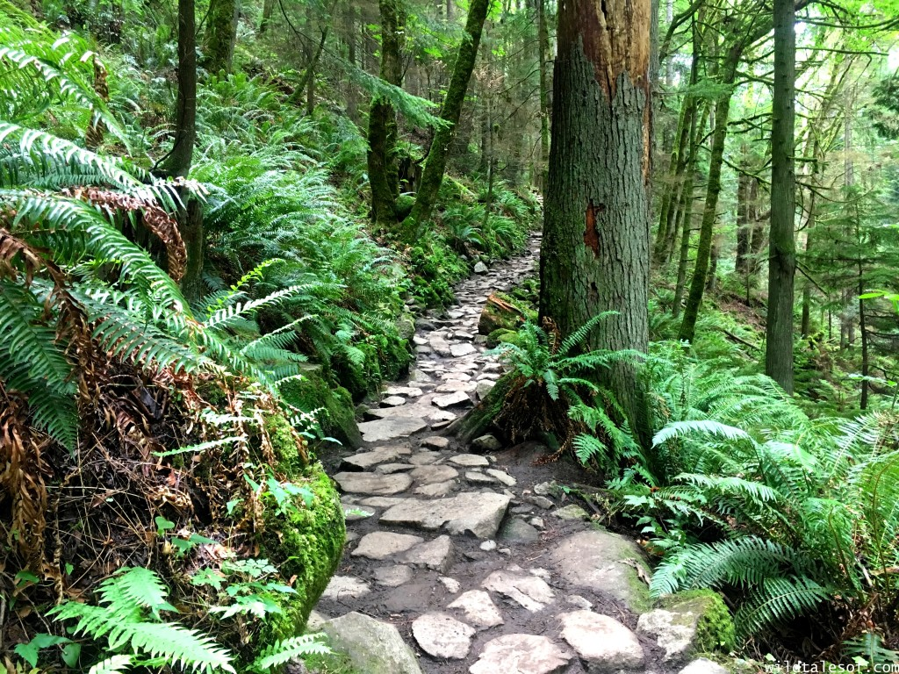

Most of the Washingtonians believes that being in nature has a positive impact on people’s hearts, minds and bodies. It is vital for everyone to have the opportunity to access the outdoors, and we are committed to reducing barriers to hiking trails and lands. We strive to inspire people to go outside—giving them the skills and knowledge they need to recreate safely and sustainably. Therefore for our class Project, Senet, Promila and Charles have decided to design a webpage where people can login and see what the top 3 best hiking areas in Washington are.
These hiking places are based on a Washington Trail Website
For More hiking spotsoutside of WashingtonClick Me